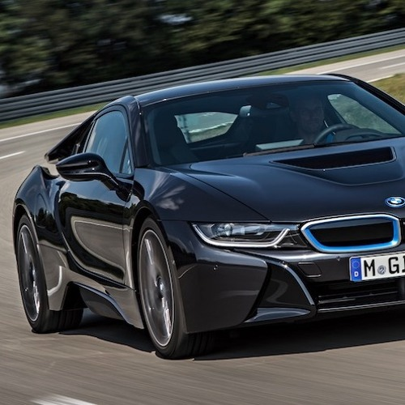
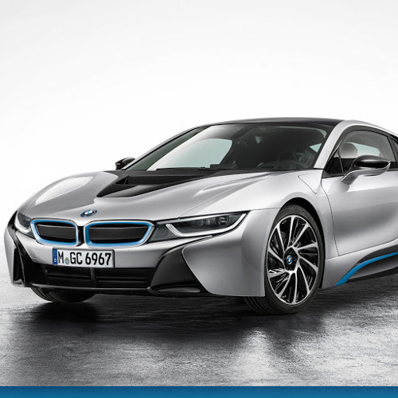
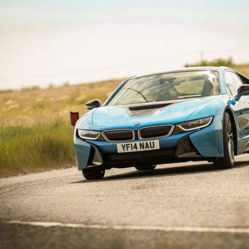
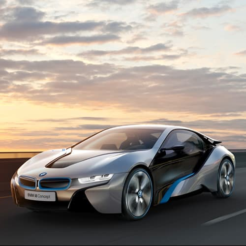
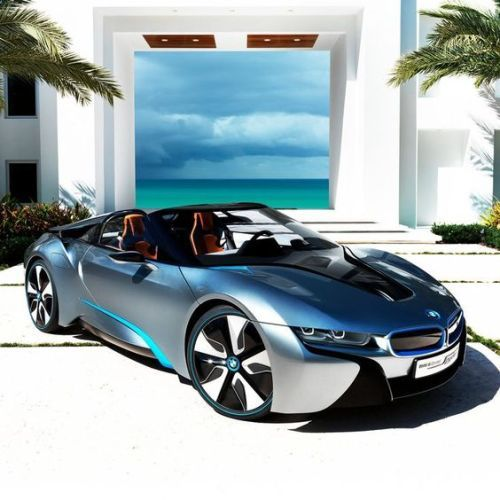
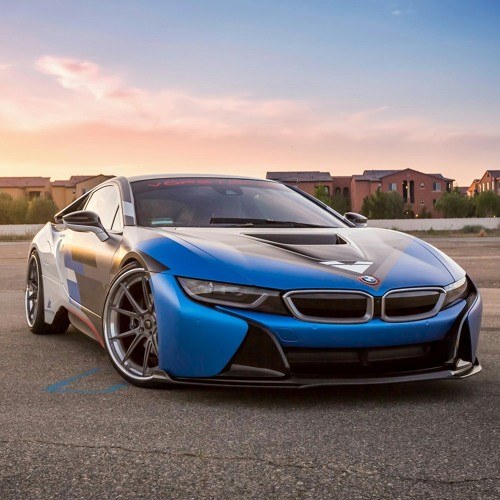
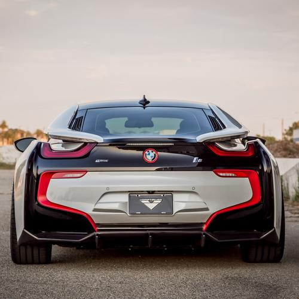
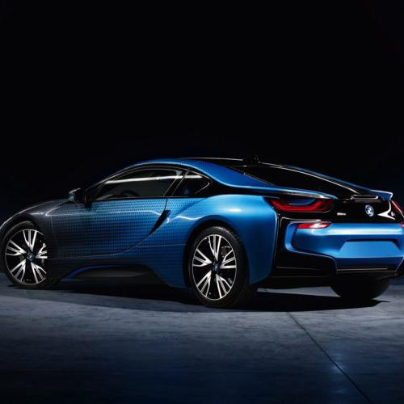

   
Review
BMW i — это комплексная революционная концепция экологически чистой мобильности. Она включает в себя концептуальные транспортные средства и сервисы мобильности, вдохновляющие дизайнерские решения и переосмысленную интерпретацию премиальности, неразрывно связанную с заботой об окружающей среде. В эту концепцию входят поистине захватывающие инновационные автомобили: полностью электрический BMW i3, позволяющий передвигаться в черте города с нулевым уровнем вредных выбросов и полностью спроектированный в соответствии с концепцией устойчивого развития, а также революционные спортивные автомобили BMW i8 Coupé и BMW i8 Roadster. Электрический и электризующий: каждая деталь, каждая характеристика и каждая отличительная черта BMW i3 говорят о приверженности активному городскому стилю жизни. Приводимый в движение электромотором с нулевым уровнем вредных выбросов, компактный BMW i3 способен обеспечить городскую мобильность там, где она необходима больше всего: в городских центрах, где уже действует целый ряд ограничений на передвижение автомобилей определенных классов. Для полностью экологически чистого автомобиля BMW i3 обладает захватывающей разгонной динамикой — как с низких скоростей, так и с места, — а высоковольтная батарея (изготовленная по литий-ионной технологии) обеспечивает запас хода до 200 км, позволяя совершать поездки по мегаполису и даже в пригороды, не беспокоясь о протяженности маршрута. Самый прогрессивный спортивный автомобиль: еще более экономичный, благодаря использованию интеллектуально облегченных конструкций из карбона и аэродинамичному дизайну, еще более экологичный, благодаря применению в отделке перерабатываемых материалов — и при этом столь же динамичный и великолепно выглядящий. Никаких компромиссов — лишь оптимальное сочетание удовольствия от вождения и ответственности. BMW i8, доступный в кузове Coupé или родстер, является подключаемым гибридом, объединяющим в себе преимущества электромобильности и инновационных технологий двигателестроения. В результате инженерам удалось добиться впечатляющих динамических характеристик при исключительно низком уровне расхода топлива и выбросов CO2.
   